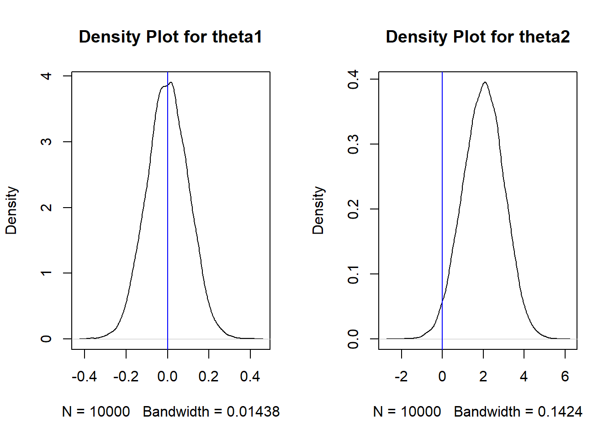

20 Estimation
20.1 Introduction
In Section 11, you were introduced to some of the key concepts associated with statistical inference: that we use data from a representative sample to estimate features of interest in a population. The features of the population are typically called parameters, for example, the population mean, the population median, and so on. Since we do not have access to data for the population, we use an estimator based on our sample to estimate the value of the parameter.
Some estimators may seem obvious, such as using the sample mean to estimate the population mean. But some are not, for example, why do we use this formula for the sample variance, \(s^2 = \frac{\sum (x_i - \bar{x})^2}{n-1}\) when estimating the population variance? You’ve probably asked why is \(n-1\) in the denominator.
Whenever we propose an estimator for a parameter, we want to assess how “good” the estimator is. We will cover a few measures that are used to assess an estimator: bias, variance, and mean-squared error.
20.2 Properties of Estimators
How do we assess if our estimators are “good” or not? We define a few concepts that are used in this assessment.
20.2.1 Estimators VS Estimates
We wrote about estimators and estimates earlier in Section 11, but as a quick reminder on what these are:
An estimator is a numerical summary associated with samples.
An estimated value, or estimate, is the actual value of the estimator based on a sample.
We define some notation:
Let \(\theta\) denote the population parameter we wish to estimate.
Let \(\hat{\theta}\) denote the estimator for \(\theta\).
We will use a simple example to illustrate these ideas in the rest of this section. Consider \(X_1, \cdots, X_n\) i.i.d. Normal with unknown mean \(\mu\) and variance \(\sigma^2\) that is known. We can define two estimators of \(\mu\) as \(\hat{\theta}_1 = \bar{X} = \frac{\sum_{i=1}^n X_i}{n}\) and \(\hat{\theta}_2 = X_1 + 2\). The first estimator takes the average value of the \(n\) data points. The second estimator uses the first data point and adds 2 to it.
We can see that we are free to define estimators in various ways. The question now is how do we evaluate whether an estimator is “good” or not. There are a few metrics to evaluate estimators.
20.2.2 Bias
One metric used to evaluate estimators is to consider the long-run average of an estimator. An estimator is unbiased if the long run average of an estimator is equal to the true value of the parameter. Mathematically, an estimator \(\hat{\theta}\) is unbiased if \(E(\hat{\theta}) = \theta\). From this definition of an unbiased estimator, we have the definition of the bias of an estimator:
\[\begin{equation} Bias(\hat{\theta}) = E(\hat{\theta}) - \theta. \tag{20.1} \end{equation}\]
So, while the value of an estimator could vary from sample to sample, the estimator is unbiased if it is equal to the true parameter, on average in the long-run.
We go back to the example from the previous subsection. Consider \(X_1, \cdots, X_n\) i.i.d. Normal with unknown mean \(\mu\) and variance \(\sigma^2\) that is known. We can define two estimators of \(\mu\) as \(\hat{\theta}_1 = \bar{X} = \frac{\sum_{i=1}^n X_i}{n}\) and \(\hat{\theta}_2 = X_1 + 2\). Assess whether \(\hat{\theta}_1\) and \(\hat{\theta}_2\) are unbiased or not.
-
The mathematical way of answering this question is to evaluate the expected value of both estimators using equation (11.1):
\(E(\hat{\theta}_1) = \frac{1}{n}E(\sum_{i=1}^n X_i) = \frac{1}{n}\sum_{i=1}^n E(X_i) = \frac{1}{n}(\mu + \cdots + \mu) = \mu\), so it is unbiased.
\(E(\hat{\theta}_2) = E(X_1 + 2) = E(X_1) + 2 = \mu +2\) which is not equal to \(\mu\), so it is biased.
-
We can also use Monte Carlo simulations to show these results. The simulation should do the following:
- The code simulates \(X_1, \cdots, X_{n}\) i.i.d. from a known distribution, and with \(n\) fixed. In the code below, I used a standard normal, with \(n=100\).
- Generate a large number of replicates (I used 10 thousand replicates) of \(X_1, \cdots, X_{n}\).
- For each replicate of \(X_1, \cdots, X_{n}\), calculate \(\hat{\theta}_1 = \frac{\sum_{i=1}^n X_i}{n}\) and \(\hat{\theta}_2 = X_1 + 2\).
- We then find the average of \(\hat{\theta}_1\) and \(\hat{\theta}_2\) across the replicates.
- The code simulates \(X_1, \cdots, X_{n}\) i.i.d. from a known distribution, and with \(n\) fixed. In the code below, I used a standard normal, with \(n=100\).
If the estimator is unbiased, the average from the Monte Carlo simulation should be close to 0, since the true mean of a standard normal is 0.
## Function that simulates n obs from Z, then finds theta1 and theta2
estimators <- function(n){
Xs <- rnorm(n)
est1 <- mean(Xs) ## theta1
est2 <- Xs[1] + 2 ## theta2
return(c(est1, est2))
}
## use 10,000 reps with n = 100
result <- replicate(10000, estimators(100))
## Find the long-run average of both estimators
apply(result, 1, mean) ## this is also bias since true mean of Z is 0## [1] 0.0002085981 1.9997755252
##create density plots to show distribution for est1 and est 2, and overlay line to show true value of mu
par(mfrow=c(1,2))
plot(density(result[1,]), main="Density Plot for theta1")
abline(v=0, col="blue")
plot(density(result[2,]), main="Density Plot for theta2")
abline(v=0, col="blue")
Figure 20.1: Dist of theta1 (left) and theta2 (right)
Figure 20.1 displays the distribution of the 10 thousand \(\hat{\theta}_1\)s and \(\hat{\theta}_2\)s. Visually, an estimator is unbiased if its “middle” is equal to the value of the parameter, which is 0. We can see this is clearly not the case for \(\hat{\theta}_2\) so it is biased.
The results from the MC simulation matches with the math. We had shown that \(\hat{\theta}_1 = \frac{\sum_{i=1}^n X_i}{n}\) is an unbiased estimator for \(\mu\), whereas \(\hat{\theta}_2 = X_1 + 2\) is a biased estimator.
So, based on bias, the sample mean is a better estimator for the population mean than using the first data point and adding 2 to it.
The bias deals with the centrality of the estimator, i.e. is the estimator equal to the true parameter, on average. As we have seen in previous modules, we are not only concerned with measures of centrality, but also with measures of uncertainty. For example, how likely is it to observe a random sample where its estimated value is far from the true parameter?
20.2.3 Standard Error and Variance
It turns out that the concept of variance can also be applied to estimators, as they can be viewed as random variables, and not just to individual data points. Estimators with smaller variances have a smaller degree of uncertainty: the value of the estimators do not change as much from random sample to random sample.
We can go back to the example from the previous subsection. Consider \(X_1, \cdots, X_n\) i.i.d. Normal with unknown mean \(\mu\) and variance \(\sigma^2\) that is known. We defined two estimators of \(\mu\) as \(\hat{\theta}_1 = \frac{\sum_{i=1}^n X_i}{n}\) and \(\hat{\theta}_2 = X_1 + 2\). Derive the variance of both estimators.
The mathematical way of answering this question is to evaluate the variance of both estimators using equation (11.2):
\(Var(\hat{\theta}_1) = \frac{1}{n^2}Var(\sum_{i=1}^n X_i) = \frac{1}{n^2} \sum_{i=1}^n Var(X_i) = \frac{1}{n^2} (\sigma^2 + \cdots + \sigma^2) = \frac{\sigma^2}{n}\).
\(Var(\hat{\theta}_2) = Var(X_1 + 2) = Var(X_1) = \sigma^2\).
There is also another term used when evaluating the variance of an estimator: this is the standard error of an estimator. This is essentially the standard deviation of the estimator, i.e. \(SE(\hat{\theta}) = \sqrt{Var(\hat{\theta})}\). Going back to our example: \(SE(\hat{\theta}_1) = \frac{\sigma}{\sqrt{n}}\) and \(SE(\hat{\theta}_2) = \sigma\).
Note: The term standard error is only applied to estimators. It is not used when finding the standard deviation of data points.
We can also use our Monte Carlo simulation from the previous subsection to estimate these values:
var(result[1,]) ##should be close to 1/100, since n=100## [1] 0.01016771
var(result[2,]) ##should be close to 1## [1] 0.9967087
sd(result[1,]) ##should be close to 1/10## [1] 0.100835
sd(result[2,]) ##should be close to 1## [1] 0.998353These results are reflected in Figure 20.1. Notice the scale of the x-axis for the plot of \(\hat{\theta}_2\) (on the right) is much larger, so \(\hat{\theta}_2\) has larger variability than \(\hat{\theta}_1\), i.e. we are more uncertain about the value of \(\hat{\theta}_2\), since they deviate more from each other.
It should be clear by now that estimators with smaller standard errors (or variances) are desired. So, based on standard error, the sample mean is a better estimator for the population mean than using the first data point and adding 2 to it.
20.2.4 Consistency
An associated concept with bias, variance, and standard errors of estimators is consistency. The definition of consistency in estimators is fairly technical, so we will give a broad overview of its concept.
The behavior of an estimator \(\hat{\theta}\) may change as the number of data points \(n\) changes.
An estimator is consistent if \(\hat{\theta}\) gets closer to and approaches the true value of \(\theta\) as \(n\) gets larger and approaches infinity. This means as the sample size \(n\) gets larger, the estimator tends to get closer to the true value of the parameter.
To check if an estimator \(\hat{\theta}\) is consistent, we have to check two things:
- Its bias shrinks to 0 as \(n\) approaches infinity, and
- Its variance shrinks to 0 as \(n\) approaches infinity.
We go back to the example from the previous subsection. Consider \(X_1, \cdots, X_n\) i.i.d. Normal with unknown mean \(\mu\) and variance \(\sigma^2\) that is known. We defined two estimators of \(\mu\) as \(\hat{\theta}_1 = \frac{\sum_{i=1}^n X_i}{n}\) and \(\hat{\theta}_2 = X_1 + 2\). Assess whether these estimators are consistent or not.
For \(\hat{\theta}_1\), we had earlier shown that
- \(E(\hat{\theta}_1) = \mu\), so its bias is \(E(\hat{\theta}_1) - \mu = 0\). Its bias is 0 regardless of sample size \(n\).